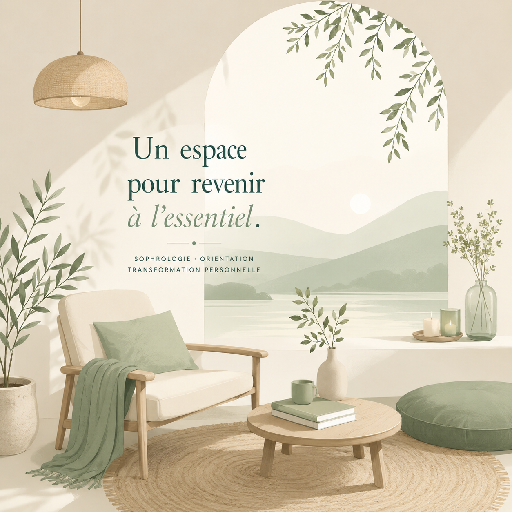

Échange découverte téléphonique
Un premier temps d'échange pour comprendre votre demande et vous orienter vers le format le plus adapté.
Offert
Services & tarifs
Un cadre d'accompagnement personnalisé pour avancer avec plus de sérénité, de présence et de clarté.
Prestations
Un premier temps d'échange pour comprendre votre demande et vous orienter vers le format le plus adapté.
Un temps pour apaiser le mental, réguler les émotions, revenir au corps et retrouver un ancrage plus stable.
Ateliers, bilans d'orientation et bilan complet postbac pour clarifier les talents, les envies et les pistes d'orientation.
Un format construit autour de votre situation, avec les outils les plus adaptés à votre rythme.
Modalités
Quelques repères pratiques pour organiser votre accompagnement en toute confiance.
